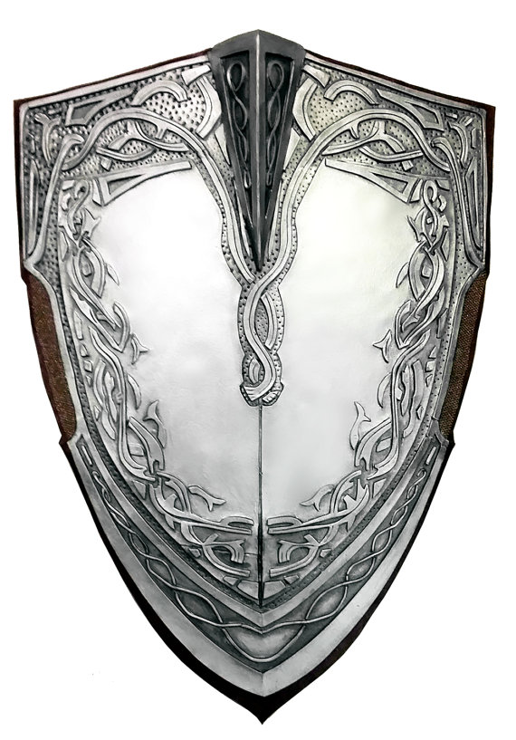

When in combat you need to know if you hit or not. This is the point of Armor Class, when making an attack roll you are determining if you can get equel to or over the target's AC, if you can you then go to the damage roll to see how much HP they lose, AC has a few diffrent ways to be calculated, when you are not wearing any armor you have an AC of 10 + your DEX moedifier (unless you have another trait that gives you something else) if you are wearing armor then look at the Armor section of this website for a much more detailed discription of how you go about determining AC